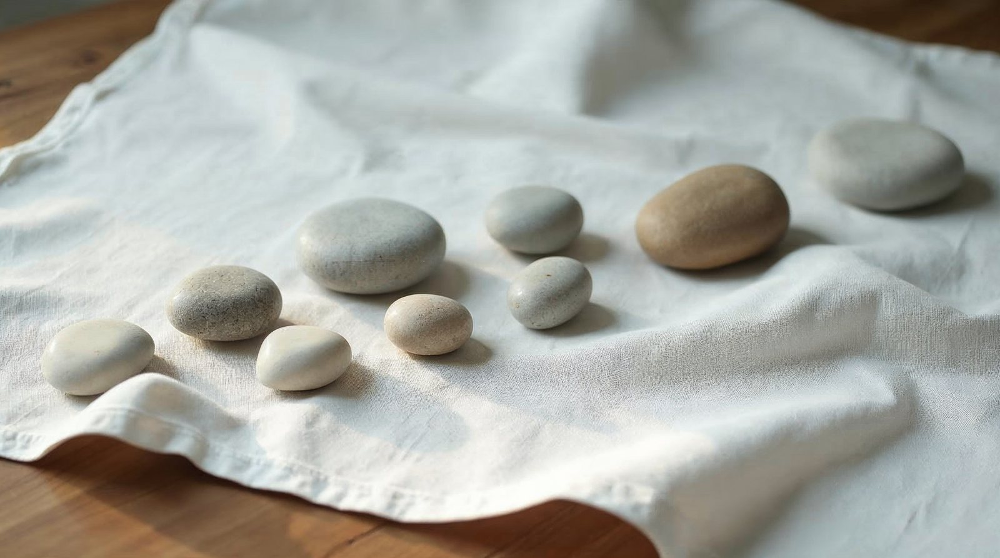
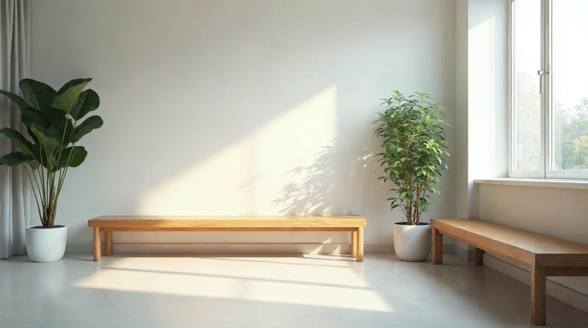
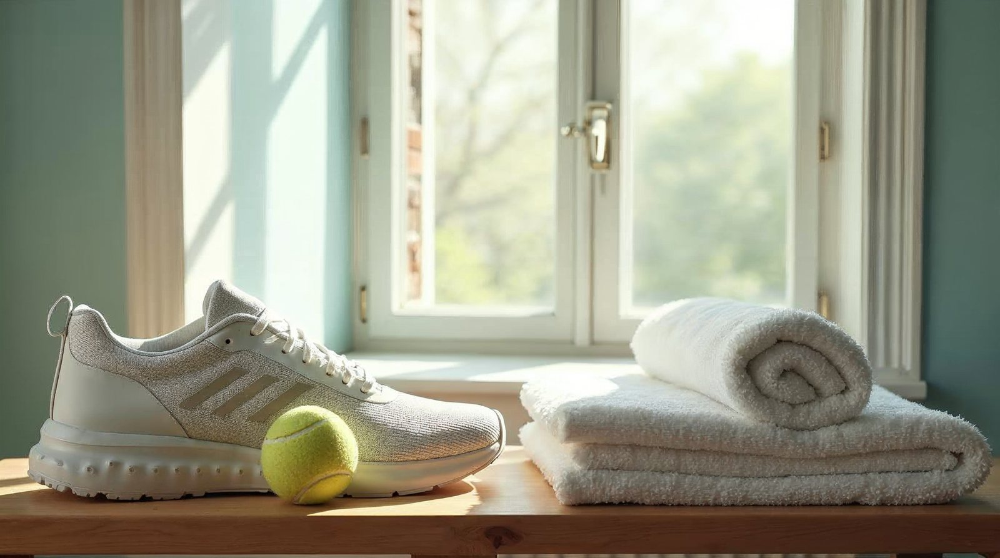
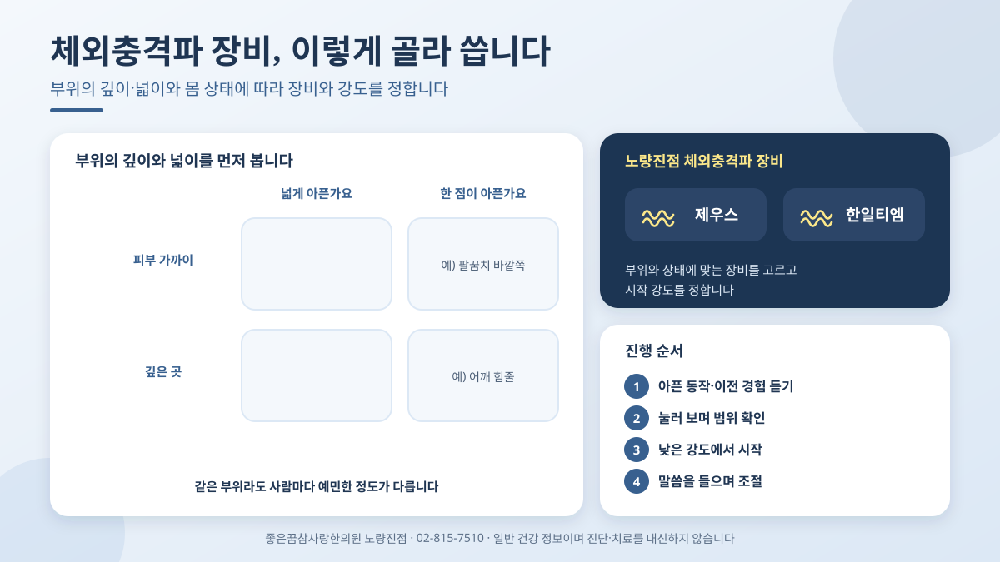

이종호 한의사 감수좋은꿈참사랑한의원 대표원장 (한의사 면허번호 19769)발행 2026-11-23 · 수정 2026-11-26
이 글의 차례
- 왜 이런 불편이 생길 수 있나요
- 체외충격파는 방식에 따라 어떻게 나누어 설명하나요?
- 먼저 이렇게 여쭙니다
- 일상에서 먼저 해 볼 수 있는 것
- 상황별 예시
- 스스로 점검해 보세요
- 왜 장비 이름보다 위치가 먼저일까요
- 강도는 어떻게 정하고 조절하나요?
- 부위별로 이렇게 살핍니다
- 받는 동안 이렇게 말씀해 주세요
- 체외충격파와 함께 쓰는 방법은 어떻게 정하나요?
- 몇 번, 어떤 간격으로 받게 되나요?
- 받으러 오시기 전에 준비할 것은요?
- 한의원에서 함께 살필 수 있는 경우
- 첫 방문은 이렇게 진행됩니다
- 얼마나 지켜보고 언제 상담할까요
- 이렇게 기록해 오시면 상담이 쉬워집니다
- 이런 증상은 먼저 확인이 필요합니다
- 관련 글
체외충격파 장비는 진찰 뒤 통증 부위와 깊이, 그리고 몸 상태를 보고 고릅니다. 좋은꿈참사랑한의원에는 제우스와 한일티엠 두 종류의 체외충격파 장비가 있습니다. 같은 이름의 치료라도 부위와 상태에 따라 어떤 장비를 쓸지, 강도를 어떻게 할지가 달라집니다.
장비 이름보다 먼저 정해야 하는 것은 어디에, 얼마나 할지입니다. 같은 장비라도 위치와 강도를 어떻게 잡느냐에 따라 느낌이 크게 달라지고, 세게 할수록 좋은 것도 아닙니다. 그래서 장비를 고르기 전에 아픈 지점을 손으로 확인하고, 필요하다고 판단되면 초음파로 그 부위를 함께 본 뒤 시작합니다.
왜 이런 불편이 생길 수 있나요
- 체외충격파 장비는 종류에 따라 에너지를 전달하는 방식과 닿는 깊이가 다를 수 있어, 부위와 상태를 보고 고릅니다.
- 어깨 힘줄처럼 비교적 깊은 부위와 팔꿈치 바깥쪽처럼 피부 가까운 부위는 살피는 방법이 다릅니다.
- 같은 부위라도 사람마다 예민한 정도가 달라, 처음부터 정해진 강도로 하지 않습니다.
- 이전에 받아 본 경험과 그때의 느낌도 장비와 강도를 고르는 단서가 됩니다.
- 팔꿈치 바깥쪽, 손목, 발뒤꿈치처럼 뼈와 가까운 부위는 같은 강도도 더 크게 느껴질 수 있습니다.
- 주사나 수술을 받은 부위, 피를 묽게 하는 약을 먹는 경우에는 위치와 강도를 더 신중하게 정합니다.
체외충격파는 방식에 따라 어떻게 나누어 설명하나요?
체외충격파 장비는 충격파를 만들고 전달하는 방식에 따라 몇 가지로 나누어 설명하기도 합니다. 다만 그 구분은 장비를 이해하는 큰 틀일 뿐이고, 같은 장비라도 대는 위치와 각도, 세기에 따라 받는 느낌이 크게 달라집니다.
그래서 어떤 장비가 더 좋은지보다 이 자리와 깊이, 오늘의 몸 상태에 무엇이 맞는지를 먼저 봅니다. 진찰 뒤 두 장비 가운데 하나를 고르고, 가장 아픈 자리는 원장이 직접 찾아 반응을 보며 강도를 조절합니다.
받으시는 분 입장에서는 장비 이름을 기억하실 필요는 없습니다. 다만 받는 동안 톡톡 두드리는 느낌인지, 찌릿하게 울리는 느낌인지, 아픈 자리에 닿을 때 또렷해지는지를 말씀해 주시면 위치와 세기를 맞추는 데 큰 도움이 됩니다.
먼저 이렇게 여쭙니다
- 아픈 곳이 넓게 아픈가요, 한 점이 콕 집어 아픈가요?
- 아픈 부위가 피부 가까이인가요, 깊은 곳인가요?
- 이전에 체외충격파를 받아 본 적이 있나요?
- 그때 어떤 느낌이었는지 기억나시나요?
- 치료 다음 날 뻐근함이 얼마나 이어졌나요?

일상에서 먼저 해 볼 수 있는 것
- 이전 치료 경험이 있으면 그때의 느낌과 횟수를 메모해 오기
- 치료 중 불편하면 참지 말고 바로 말하기
- 치료 당일 무리한 운동은 피하기
- 다음 방문까지 달라진 동작을 기록하기
- 치료 부위에 파스나 연고를 바른 날은 미리 말하기
- 치료 부위를 편하게 걷어 올릴 수 있는 옷 입고 오기
상황별 예시
- 예를 들어 팔을 들어 올릴 때 어깨 옆이 깊숙이 아픈 직장인이라면, 아픈 자리가 깊은 힘줄 쪽인지 손으로 짚어 보고 필요하면 초음파로 확인한 뒤 그 깊이에 맞는 장비와 시작 강도를 정합니다.
- 예를 들어 아침 첫걸음에 발뒤꿈치가 콕 찌르듯 아픈 경우에는 아픈 범위가 좁고 뼈와 가까워, 위치를 정확히 맞춘 뒤 낮은 강도에서 시작해 반응을 보며 조절합니다.
- 예를 들어 예전에 체외충격파를 받고 다음 날까지 많이 욱신거렸던 기억 때문에 망설이는 어르신이라면, 그때 받은 부위와 느낌을 먼저 듣고 더 낮은 강도에서 시작하며, 받는 중에도 언제든 멈출 수 있다는 점을 미리 말씀드립니다.
스스로 점검해 보세요
- 가장 아픈 곳이 손가락 하나로 짚이는지, 손바닥만큼 넓은지 말할 수 있다.
- 아픈 동작(팔 들기, 계단, 아침 첫걸음 등)을 한 가지 이상 꼽을 수 있다.
- 예전에 체외충격파를 받은 적이 있고, 그때 강도와 다음 날 느낌을 기억한다.
- 피를 묽게 하는 약을 먹고 있거나, 아픈 부위에 주사나 수술을 받은 적이 있다.
- 임신 중이거나 임신 가능성이 있다.
- 아픈 부위 가까이에 금속 삽입물이 있거나 피부에 상처가 있다.
아래쪽 세 가지 가운데 하나라도 해당하면 체외충격파를 받기 전에 먼저 알려 주세요.
왜 장비 이름보다 위치가 먼저일까요
체외충격파는 아픈 조직에 정확히 닿을 때 의미가 있습니다. 아무리 맞는 장비를 골라도 위치가 한두 마디만 어긋나면 엉뚱한 곳에 자극이 가고, 정작 불편한 자리에는 충분히 닿지 않을 수 있습니다.
그래서 장비를 켜기 전에 아픈 자리를 손으로 짚어 확인하고, 필요하다고 판단되면 초음파로 힘줄의 위치와 깊이를 함께 봅니다. 치료한 주요 부위는 기록해 두었다가, 다음 방문 때 같은 자리부터 다시 짚어 봅니다.
강도는 어떻게 정하고 조절하나요?
첫날은 낮은 강도에서 시작해 몇 번 대어 본 뒤 느낌을 여쭙고, 반응을 보며 조절합니다. 느낌을 0점(아무 느낌 없음)에서 10점(참기 어려운 정도) 사이 숫자로 말씀해 주시면 조절이 훨씬 쉬워지고, 참을 만한 범위를 넘겨 올리는 것을 목표로 하지 않습니다.
같은 분이라도 그날의 컨디션에 따라 느낌이 달라질 수 있습니다. 잠을 못 잤거나 몹시 피곤한 날, 생리 중이거나 감기 기운이 있는 날은 평소보다 세게 느껴질 수 있어 그날 상태를 먼저 여쭙고 시작 강도를 다시 정합니다.
다음 방문 때는 지난번 치료 다음 날 뻐근함이 얼마나 이어졌는지를 듣고 강도를 맞춥니다. 뻐근함이 짧게 지나갔다면 비슷하게 이어 가고, 오래 이어졌다면 강도를 낮추거나 간격을 넓힙니다.
부위별로 이렇게 살핍니다
- 어깨: 팔을 들어 올릴 때 아픈 깊은 힘줄인지, 어깨 위쪽 근육이 넓게 뭉친 것인지에 따라 위치와 방식을 다르게 정합니다.
- 팔꿈치 바깥쪽: 피부 바로 아래 뼈가 있어 같은 세기도 크게 느껴질 수 있어 낮게 시작합니다.
- 발뒤꿈치: 아침 첫걸음에 아픈 한 점을 찾아 그 자리를 중심으로 하고, 발바닥 아치 쪽도 함께 눌러 봅니다.
- 무릎 아래: 무릎뼈 바로 아래 힘줄 자리를 짚고, 성장기라면 뼈가 자라는 자리를 피합니다.
- 엉덩이 옆: 살이 두꺼운 편이라 깊이를 고려하고, 허리에서 내려오는 통증인지 먼저 구분합니다.
같은 부위라도 사람마다 아픈 자리가 조금씩 달라, 위의 내용은 큰 방향일 뿐입니다. 진찰에서 직접 짚어 본 결과에 따라 위치와 방식을 다시 정합니다.
받는 동안 이렇게 말씀해 주세요
- "아까보다 세게 느껴져요": 같은 세기라도 위치가 바뀌면 느낌이 달라질 수 있어 위치부터 다시 확인합니다.
- "다른 곳이 울려요": 자극이 아픈 자리 밖으로 퍼진다는 뜻일 수 있어 각도와 위치를 조정합니다.
- "손발이 저려요": 신경 가까이에 닿았을 수 있어 바로 멈추고 자리를 옮깁니다.
- "딱 거기예요": 아픈 자리를 맞추는 데 가장 도움이 되는 말씀입니다.
받는 동안의 말씀은 참는 것보다 훨씬 쓸모가 큽니다. 통증을 꾹 참으면 몸이 움츠러들고 근육에 힘이 들어가, 충격파가 닿는 위치가 조금씩 어긋나기 쉽기 때문입니다. 소리 내어 말씀하기 어렵다면 손을 들어 알려 주셔도 됩니다.
체외충격파와 함께 쓰는 방법은 어떻게 정하나요?
체외충격파만으로 모든 불편을 살피기는 어렵습니다. 아픈 자리 주변 근육이 함께 굳어 있다면 침으로 그 부위를 살피고, 관절이나 척추의 움직임이 함께 관련되어 있다면 추나를 이어서 검토합니다.
가장 아픈 곳을 원장이 치료한 뒤, 그 밖의 불편한 곳은 직원이 자기장·온열·패드형 물리치료로 이어서 살피기도 합니다. 첫날 뒤 뻐근함이 길었다면 다음에는 강도를 낮추거나 함께 쓰는 방법을 바꾸며, 어떤 조합이 맞는지는 몇 번의 반응을 보며 함께 맞추어 갑니다.
몇 번, 어떤 간격으로 받게 되나요?
몇 번을 받을지는 처음부터 정해 두기보다 반응을 보며 함께 정합니다. 아픈 기간이 길었는지, 부위가 깊은지, 일상에서 그 부위를 얼마나 쓰는지에 따라 필요한 횟수와 간격이 달라지기 때문입니다.
받으러 오시기 전에 준비할 것은요?
- 치료 부위를 쉽게 드러낼 수 있는 옷: 어깨라면 단추 셔츠나 헐렁한 옷, 무릎이라면 걷어 올리기 쉬운 바지가 편합니다.
- 치료 부위에 바른 크림이나 붙인 파스는 오시기 전에 떼어 두시면 좋습니다.
- 그날 몹시 피곤하거나 몸살 기운이 있다면 접수 때 먼저 말씀해 주세요.
치료 당일에는 그 부위로 무거운 운동을 하지 않는 것이 좋아, 운동 일정이 있다면 미리 말씀해 주시면 날짜를 함께 맞춥니다. 받은 날에는 뻐근하다고 그 부위를 세게 주무르지 않는 것이 좋습니다.
한의원에서 함께 살필 수 있는 경우
- 통증 부위를 넓게 살핀 뒤 부위와 깊이에 맞는 장비를 고릅니다.
- 강도를 낮게 시작해 말씀을 들으며 조금씩 조절합니다.
- 반응을 보며 침, 약침, 추나와 이어서 쓸지 함께 정합니다.
체외충격파는 진찰 후 필요하다고 판단될 때만 하며, 횟수와 간격은 진찰 뒤 반응을 보며 함께 정합니다. 비용과 보험 적용 여부는 방문 전 전화(02-815-7510)로 확인해 주세요. 복용 중인 약은 처방한 의사와 상의 없이 줄이거나 끊지 않습니다.

첫 방문은 이렇게 진행됩니다
- 맥 짚기와 혀·배 살피기: 모든 분의 맥을 먼저 짚고, 맥을 짚으면서 그날의 피로와 잠, 소화 상태를 여쭙습니다. 필요하면 혀와 배도 봅니다. 몹시 지친 날은 같은 강도도 더 크게 느껴질 수 있어 함께 여쭙습니다.
- 이야기 듣기: 아픈 동작과 시작 시기, 이전 체외충격파 경험과 그때의 느낌, 복용 중인 약을 충분히 듣습니다.
- 부위 확인: 통증 부위를 눌러 보고 움직여 보며 범위를 확인하고, 필요하다고 판단될 때 초음파로 힘줄과 주변 조직을 함께 봅니다. 초음파는 진료 중 판단을 돕는 확인 도구로 씁니다.
- 장비와 강도 정하기: 제우스와 한일티엠 가운데 부위와 깊이, 상태에 맞는 장비를 고르고, 낮은 강도로 시작해 받는 동안 말씀을 들으며 위치와 세기를 조절합니다. 주요 부위는 기록해 두고 침, 약침, 추나와 이어서 쓸지도 함께 정합니다.
- 다음 방문: 치료 다음 날 느낌과 아픈 동작의 변화를 이어서 여쭙고, 기록을 보며 장비와 강도를 다시 맞춥니다. 담당 원장이 바뀌는 날에도 이전 기록을 보고 이어서 진료합니다.

얼마나 지켜보고 언제 상담할까요
- 치료 뒤 하루 이틀은 그 부위가 뻐근할 수 있습니다. 아픈 동작의 불편을 0~10점으로 매일 적어 오시면 다음 강도를 정하는 데 참고가 됩니다.
- 뻐근함이 사흘 넘게 이어지거나 날이 갈수록 심해지면, 또는 치료 뒤 멍과 붓기가 커지거나 저림이 새로 생기면 다음 예약을 기다리지 말고 전화로 알려 주세요.
- 몇 차례 받은 뒤에도 아픈 동작에 변화가 없다면 장비나 강도만 바꾸기보다 진찰부터 다시 하며 방향을 함께 점검합니다.
이렇게 기록해 오시면 상담이 쉬워집니다
- 이전에 체외충격파를 받은 부위, 횟수, 시기
- 그때 느낀 강도와 다음 날의 느낌
- 지금 아픈 곳의 범위(손바닥 크기인지, 손가락 한 마디인지)
- 복용 중인 약, 특히 피를 묽게 하는 약
장비 이름은 잊으셔도 괜찮습니다. 아픈 자리를 손가락으로 가리켜 주시는 것만으로도 시작은 충분합니다. 다음에 오시면 그 자리가 어떻게 달라졌는지부터 함께 짚어 보겠습니다.
이런 증상은 먼저 확인이 필요합니다
- 넘어지거나 부딪힌 뒤 뼈를 다쳤을 수 있는 경우
- 아픈 부위가 붉게 붓고 열이 나는 경우
이런 신호가 있으면 한의원보다 가까운 병원이나 응급실을 먼저 찾으세요.
관련 글

여쭙는 것
- 아픈 곳이 넓게 아픈가요, 한 점이 콕 집어 아픈가요?
- 아픈 부위가 피부 가까이인가요, 깊은 곳인가요?
- 이전에 체외충격파를 받아 본 적이 있나요?
생활에서 해 볼 것
- 이전 치료 경험이 있으면 그때의 느낌과 횟수를 메모해 오기
- 치료 중 불편하면 참지 말고 바로 말하기
- 치료 당일 무리한 운동은 피하기
한의원에서 함께 살필 것
- 통증 부위를 넓게 살핀 뒤 부위와 깊이에 맞는 장비를 고릅니다.
- 강도를 낮게 시작해 말씀을 들으며 조금씩 조절합니다.
- 반응을 보며 침, 약침, 추나와 이어서 쓸지 함께 정합니다.
먼저 확인이 필요한 신호
- 넘어지거나 부딪힌 뒤 뼈를 다쳤을 수 있는 경우
- 아픈 부위가 붉게 붓고 열이 나는 경우
한눈에 보는 표
| 구분 | 핵심 |
|---|---|
| 여쭙는 것 | 아픈 곳이 넓게 아픈가요, 한 점이 콕 집어 아픈가요? 아픈 부위가 피부 가까이인가요, 깊은 곳인가요? |
| 생활에서 해 볼 것 | 이전 치료 경험이 있으면 그때의 느낌과 횟수를 메모해 오기 치료 중 불편하면 참지 말고 바로 말하기 |
| 한의원에서 함께 살필 것 | 통증 부위를 넓게 살핀 뒤 부위와 깊이에 맞는 장비를 고릅니다. 강도를 낮게 시작해 말씀을 들으며 조금씩 조절합니다. |
| 먼저 확인이 필요한 신호 | 넘어지거나 부딪힌 뒤 뼈를 다쳤을 수 있는 경우 아픈 부위가 붉게 붓고 열이 나는 경우 |
자주 묻는 질문
어떤 장비가 더 좋은가요?
장비 사이에 우열을 따지기보다 부위와 상태에 맞는 것을 고르는 것이 중요합니다.
장비를 직접 고를 수 있나요?
이전 경험이나 원하는 점을 말씀해 주시면 진찰 결과와 함께 고려합니다.
한 번 받을 때 시간이 오래 걸리나요?
부위와 장비에 따라 다릅니다. 진찰 후 대략의 시간을 미리 알려 드립니다.
세게 받을수록 더 좋은 것 아닌가요?
그렇지 않습니다. 강도가 높다고 더 좋은 것이 아니며, 부위와 상태에 맞게 견딜 수 있는 범위 안에서 조절합니다. 받는 동안 참기 어려우면 바로 말씀해 주세요.
좋은꿈참사랑한의원은 재진 때 지난번 이야기부터 이어서 여쭙니다. 진료시간과 예약은 오시는 길에서 확인하세요.
어디서 상담받을 수 있나요?
좋은꿈참사랑한의원은 서울 동작구 만양로2길 2 신성빌딩 3층·5층(서울 동작구 상도동, 7호선 상도역 3번 출구 근처)에 있습니다. 한의사 3명(이종호 대표원장, 조영기 수석진료원장, 정원영 진료원장)이 진료합니다. 진료시간은 평일 09:30~20:00(점심 13:00~14:00), 토·일·공휴일 09:30~15:00이며, 방문 전 전화로 확인을 권합니다. 예약은 네이버 예약, 카카오톡 상담, 전화 02-815-7510로 받습니다.
이 글은 일반적인 건강 정보이며 개인의 진단이나 치료를 대신하지 않습니다. 증상이 있거나 복용 중인 약이 있다면 진료를 통해 확인하세요. 치료 효과는 개인마다 다를 수 있습니다.
작성 기준: 일반적으로 알려져 있는 건강 정보를 참고해 정리했습니다(대표원장 감수). 증상 기록은 1~2주 동안 하루 1회, 비슷한 시간에 적어 오시면 지난 상태와 비교하기 쉽습니다.